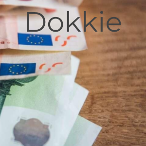

Je kunt nu beginnen met het bouwen van de Dokkie-opdracht!
In de ./wwwroot map vind je alle HTML en CSS. Er zijn twee voorbeeldpagina's, één
daarvan is dit bestand!
In ./src map folder vind je TypeScript-bestanden. TypeScript lijkt op JavaScript en gebruik je om je
pagina's interactief te maken.
Begin met het maken van user stories, deze vind je op het Agile Board van je Gitlab-repository.
